Creating ST Maps
Scrivener Export - Reformatting Needed!
This article is an export of a Scrivener document. It will definitely need at least some reformatting to work in Obsidian and MkDocs. Delete this note once the article's formatting has been fixed to some extent.
KartaVR Workflows | Creating ST Maps
Created 2021-12-20 Last Updated 2022-01-03 12.06 PM UTC -4
By Andrew Hazelden \<andrew@andrewhazelden.com>
Overview¶
Overview
The motivation for writing this content is to illustrate and describe approaches that can be used to perform high-speed panoramic warping with the existing software tools you likely already have access to on your workstation, today.
If you need to quickly stitch a lot of high-resolution footage, one way to affordably approach this challenge is to use pre-computed warping templates created using an "ST Map" which is also called UV pass warping.
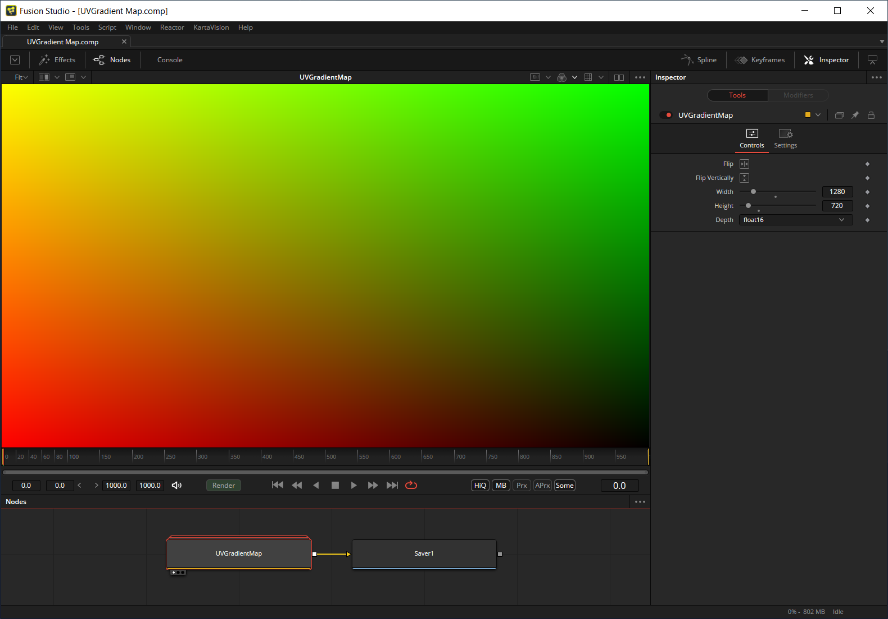
An ST Map is a high dynamic range image that stores the X/Y coordinate values for a lens distortion calculation in the red and green channels of an RGB image. If you look at the starting image you will see a horizontal and a vertical gradient stored in a linear gamma 1.0 color based image.
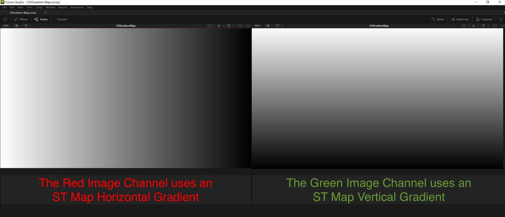
Note: Depending on your coordinate system, you might want to have the horizontal gradient start with black on the left side, and transition to white on the right side of the frame. This can also be achieved with the flip control on the UV Gradient generator.
Any warping effects performed on the ST Map gradient starting image can be "replayed" quickly and efficiently on any footage you run through this workflow. This can be a time-saver if you need to do on-set 360VR stitching previews using a program like TouchDesigner with an HDMI/SDI/USB/NDI based video capture device.
After Effects (with the RE:Vision Effects RE:Map plugin), Resolve/Fusion, NukeX, and many other tools can all work with ST Map based lens distortion images in a way that gives consistent and identical pixel matched results.
Software Required¶
Software Required
To carry out an ST Map based 360VR video stitching workflow you need to have at least two of the following programs installed. (KartaVR is an optional item to add if you are using BMD software like Resolve/Fusion.)
- KartaVR
- 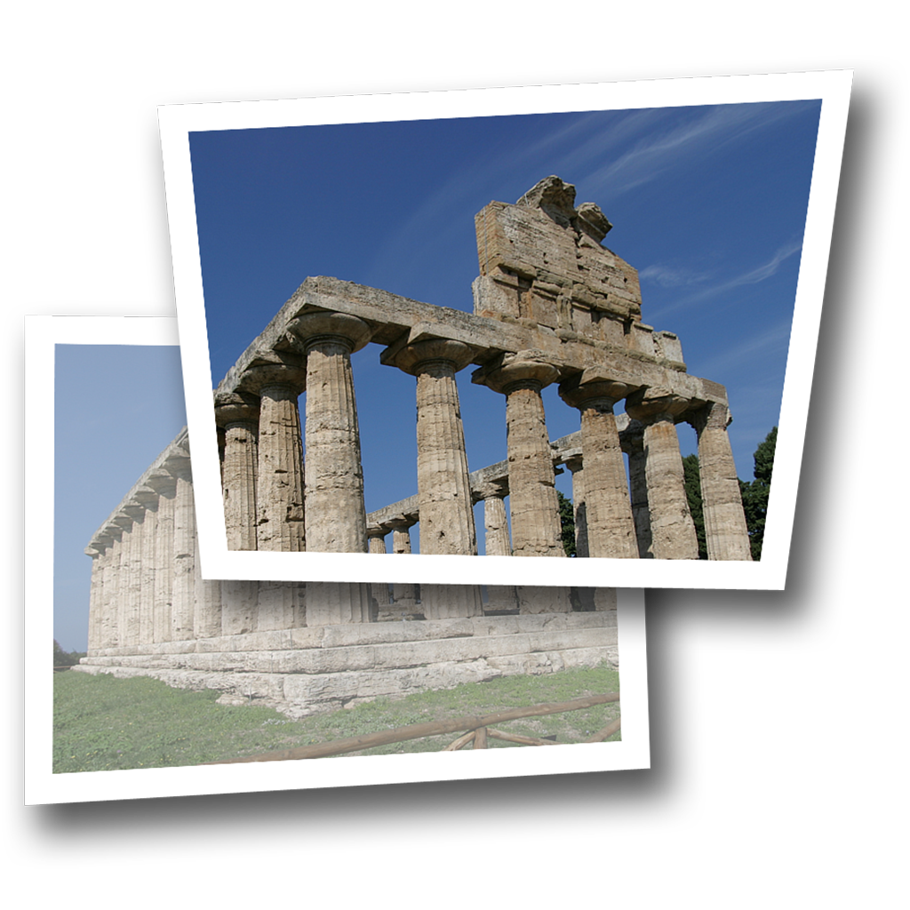PTGui Pro v12
- 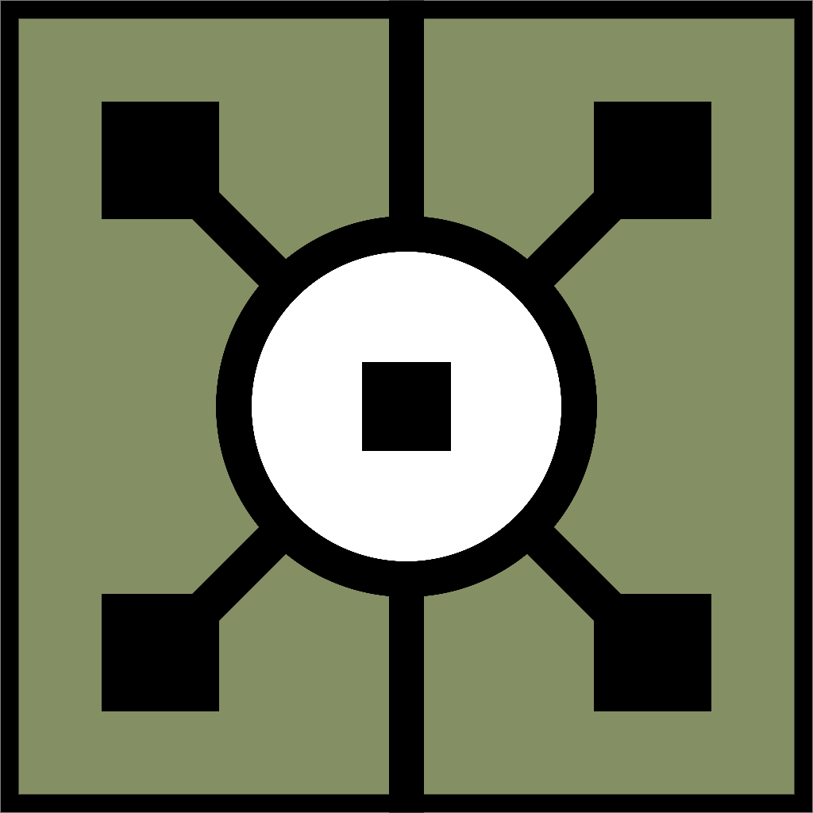 Derivative TouchDesigner
- BMD Resolve (Free) / Resolve Studio
- BMD Fusion Studio
- Foundry NukeX + Occula
- Autodesk Flame
- Adobe Photoshop + The Domemaster Photoshop Actions Pack
- Adobe After Effects + RE:Vision Effects RE:Map Plugin
- Blender Compositor (Free)
- Natron Compositor (Free)
- Imagemagick (Free) +
 FFMpeg (Free) Command-Line Tools
FFMpeg (Free) Command-Line Tools
PTGui Pro Workflow¶
PTGui Pro Workflow
Step 1. Rename the PTGui Project File¶
Step 1. Rename the PTGui Project File
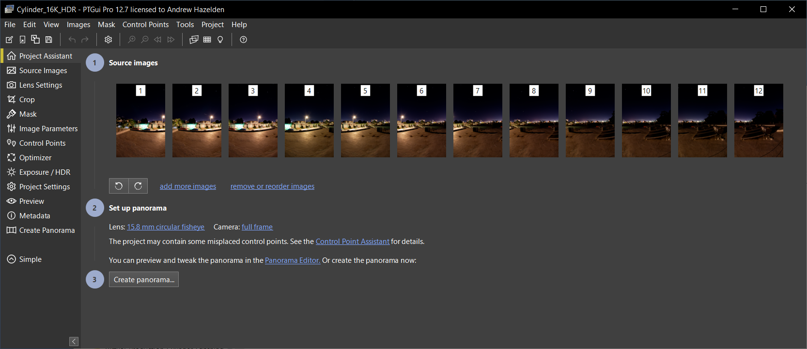
Start by opening up an existing PTGui Pro v12 .pts project file. Use the "File > Save Project As..." menu entry to save a copy of the current stitching project to disk as "stmap.pts".
Note: If your immersive content production pipeline needs to manage multiple concurrent stitching shots, in parallel, for a full-length VR or fulldome film, you could also add more details to the saved filename with values like "\<Project>_\<Shot>_\<Version>_stmap.pts"
For the rest of the steps in this tutorial, it is assumed that you have clicked to enable "Advanced" GUI mode, at the bottom of the left-hand sidebar region in the PTGui window.
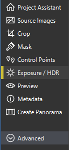
Step 2. Change the Exposure¶
Step 2. Change the Exposure
Click on the "Exposure / HDR" tab on the left side of the PTGui window.
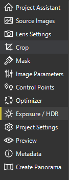
An ST Map based warping requires very precise color values. In this type of workflow, each pixel in the rendered ST map template image represents a final pre-computed warping LUT (Look Up Table) X/Y position. This data is used to carry out panoramic image projection transforms or lens distortion corrections.
Any of the color matching done per-camera view, vignetting correction, or camera response curve modifications that would typically be desirable in a color panoramic stitching workflow, need to be disabled when generating an ST Map template output.
This is due to the ST map source data holding a pure horizontal and vertical gradient, not photographic content.
Looking at the "Vignetting curve", and the "Camera response curve" charts below, we can see they are not linear "straight lines" but instead have a graceful, curved shape.
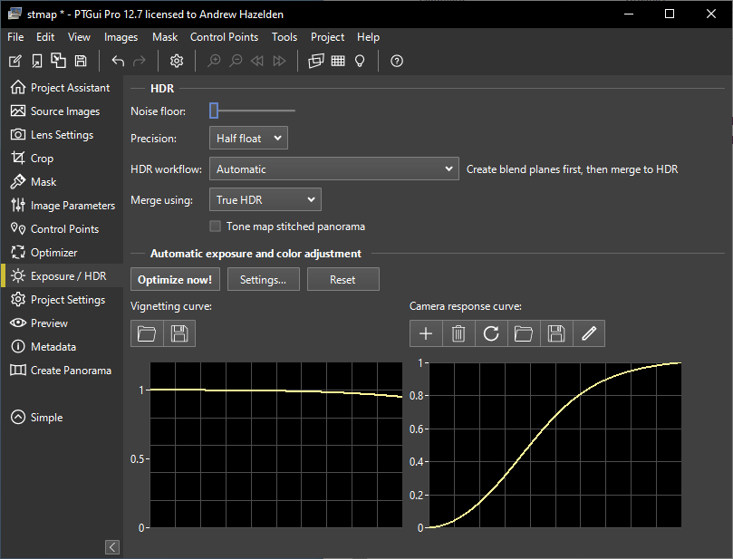
Change the "Precision" setting to "Float". This gives 32 bit-per channel processing support.
Then click on the "Automatic exposure and color adjustment" section's "Reset" button. This will flatten out the "Vignetting curve" yellow-colored line plot so it is perfectly horizontal.
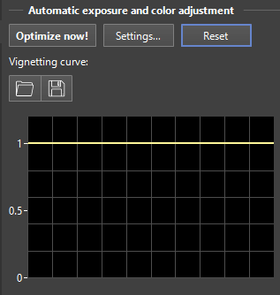
Step 3. Changing the Camera Curve¶
Step 3. Changing the Camera Curve
On the left side of the PTGui user interface is a series of sidebar "tabs". Click on the tab labelled "Image Parameters".
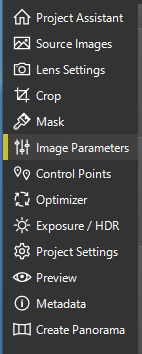
The Image Parameters tab displays a list of all the footage loaded in the current PTGui project file in a spreadsheet-like grid layout.
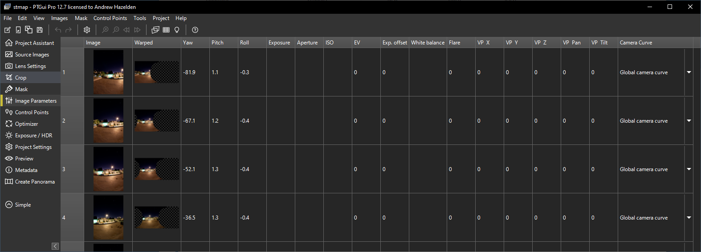
When viewing the Image Parameters tab, if you scroll horizontally or expand the window's width larger, you will notice a far right-hand column labelled "Camera Curve".
When using PTGui, most sRGB based color photos have a gamma value of 2.2. This is a typical setting for 8 bit per-channel PNG, JPG, and PSD formatted images.
In order to turn the .pts file into an ST Map based warping template we need to set all color options to use a linear color managed workflow. A gamma value of 1.0 needs to be assigned to all OpenEXR .exr formatted images used in ST map warping processes.
To do this, select all of the images in the Image Parameters tab by pressing the Ctrl+A (Windows) hotkey on your keyboard.
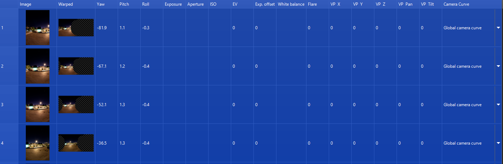
Now right-click on the small triangle in the Camera Curve column's first entry labelled "Global camera curve". Change this value to "Linear". Since all of the images were selected at the same time, this change is applied to multiple images at once. Nice!
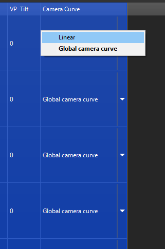
Step 4. Change the Camera Response Curve¶
Step 4. Change the Camera Response Curve
Click on the "Exposure / HDR" tab again on the left side of the PTGui window. Then look at the "Camera response curve" section on the lower right side of the window.
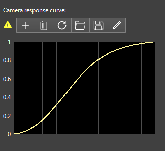
Move your cursor over the "Trash Can" icon in this toolbar. The tooltip for this button says "Remove camera response curve". This option is available since we previously used the "Image Parameters" tab to change the Camera curve to "Linear".
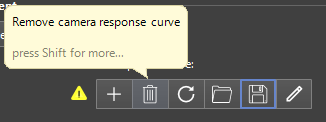
Click the "Trash Can" button.
The "Exposure / HDR" tab's "automatic exposure and color adjustment" settings should now look like this:
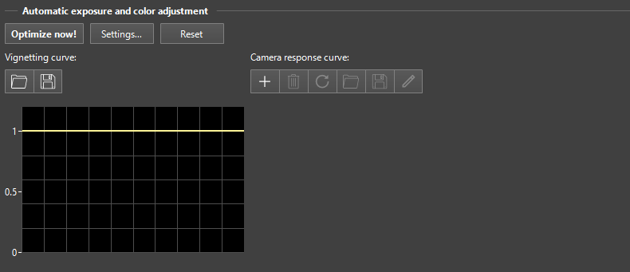
For good measure, click on the "automatic exposure and color adjustment" section's "Settings" button. A small dialog window will appear.

We need to make sure the following options are configured:
Optimize Brightness: Disabled
Optimize white balance: Disabled
Optimize lens flare: Disabled
Global > Optimize Vignetting: Disabled
Once these customizations are locked in, click the "OK" button to close the dialog. When the dialog closes, you may be asked in an additional dialog window if you would like to optimize the panorama using these settings.
Step 5. Open the Panorama Editor¶
Step 5. Open the Panorama Editor
Open the Panorama Editor window using the "Tools > Panorama Editor" menu entry. The hotkey for quickly displaying the Panorama Editor view is Ctrl+E (Windows).
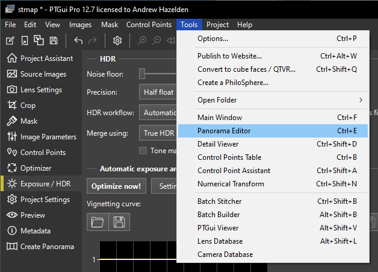
The PTGui "Panorama Editor" window lets you see a quick preview of the current stitching settings.
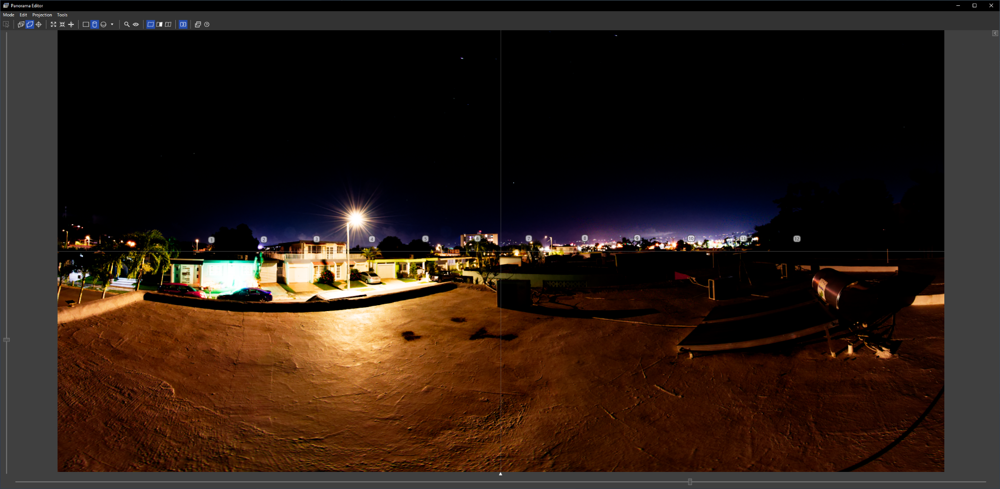
A helpful diagnostic option to enable in the Panorama editor window is the "Show image numbers" button found in the toolbar at the top of the view.
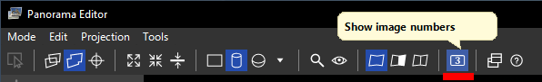
The Panorama Editor has a lot of UI controls hidden under a small "triangle" button icon found at the top right corner of the window. It can be easy to miss this feature when you are just getting started with PTGui v12.
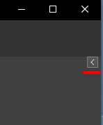
If you hover your cursor over the triangle-shaped button, an entirely new set of UI controls slide into the frame and are visible.
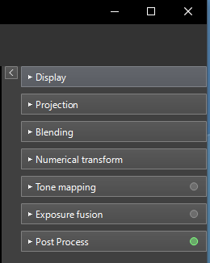
Expand the "Blending" section and un-check the "Exposure Compensation" option. It's a good idea to un-check the "Fill holes" option too.
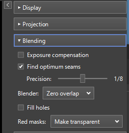
Expand the "Tone mapping" section. Un-check the "Apply tone mapping" option. This control adjusts the way shadows and highlight regions in a high dynamic range image are compressed to fit inside a low dynamic range output.
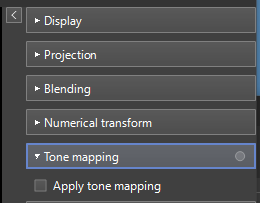
Expand the "Exposure fusion" section. Un-check the "Apply Exposure Fusion" option. This control is relevant to HDR bracket merging operations, which is not something an ST mapping workflow needs to perform when you are performing warping using an ST Map template.
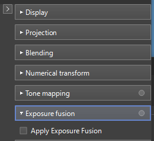
Finally, expand the "Post Process" section. The "Toning curve" graph image shows that a gamma 2.2 style output is generated by default.

This curve shape would do bad things to the precision of the ST map templates numerical values stored in the LUT (Look Up Table) so we need to disable the effect of the toning curve.
Change the "Shape" to 0.
Change the "Shift" to 0.
Make sure the "Saturation" is at 100%.
Once these changes are made, we should see a yellow-colored straight line running diagonally at a 45% angle in the chart, instead of a rolling "S" shaped curve with a slope.
At this point, the color intensity values for each pixel are mapped in a linear style going from 0 (black) to 1.0 (white) in a floating point-based color range.
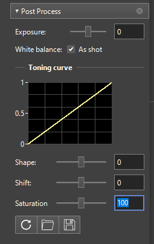
You can now close the Panorama Editor window.
Save the revised PTGui project file to disk, using the "File > Save Project" menu item, or the Ctrl+S (Windows) hotkey.
Step 6. Open the Create Panorama tab.¶
Step 6. Open the Create Panorama tab.
The essential settings in the Create Panorama tab include:
Output: [x] Individual HDR layers
This setting tells PTGui that each source image in the panorama needs to be exported to a separate warped image result, and left un-blended, when the final panoramic output is rendered to disk by the "Create Panorama" button.
HDR file format: OpenEXR (.exr) (with alpha float)
Un-check the [] use default checkbox next to the Output file prefix text field.
Output file prefix: "Render\stmap"
The "Output file prefix" setting specified will create a new "Render" sub-folder on disk at the same folder hierarchy level where the PTGui .pts file is located. Also, the rendered images will all have the initial filename of "stmap" used before the image view number, and file extension is appended to the filename.
Advanced > Interpolator: Nearest Neighbor
Advanced > Output color space: Linear sRGB IEC619660-2.1
(Optionally) you can enable the "[x] Use source image color space if possible" checkbox.
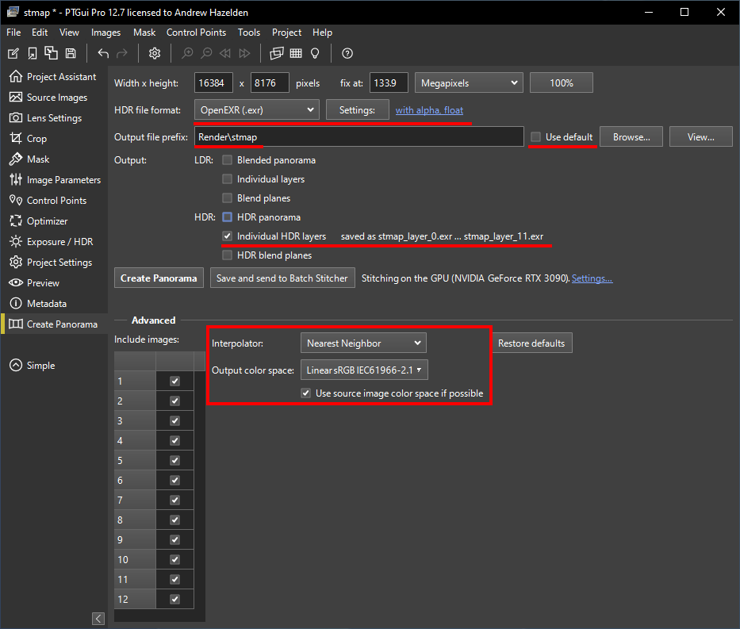
Once these settings are locked into the Create Panorama tab, it's time to click the "Settings:" button to the right of the HDR file format control. The "Settings:" button causes PTGui to display a dialog that lets you customize the image format parameters used when the image file is written to disk.
In the "EXR Options" dialog, you should change the controls to:
Alpha Channel (transparency): With alpha channel
Bit depth: Float (32 bits per channel)
Compression: ZIPS
It is super important to avoid using any lossy (destructive) image compression codecs in an ST Map as that choice will result in PTGui "shredding" the quality of the final output which gives unexpected artifacts.
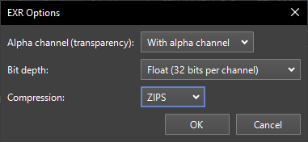
Step 7. Swap out the photos for an ST Map gradient image.
Switch to the "Source Images" tab.
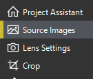
The "Source Images" view provides a quick way to see each of the photos that are loaded into the PTGui project file. A thumbnail preview image is shown along with the image file name, and the width / height of the photo.
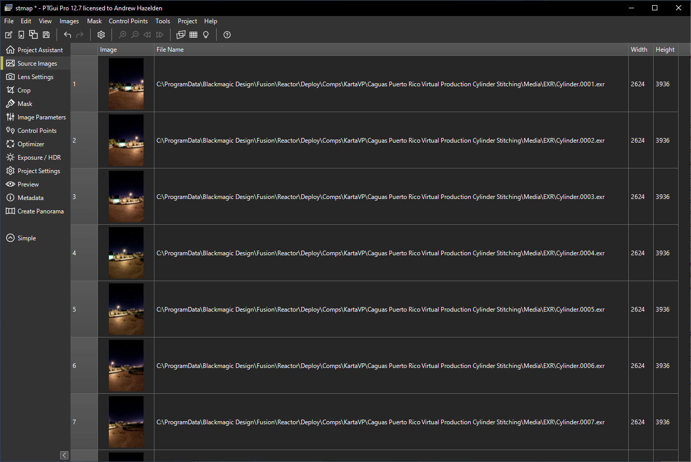
If you right-click on a photo, in the contextual pop-up menu there is a "Replace..." option that lets you swap the current image out for another document you can select from your hard disk.
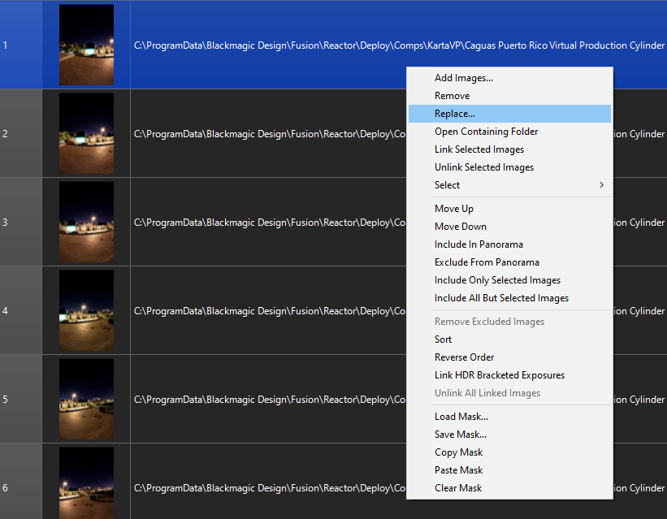
We need to replace the photos with a common red/green colored ST Map "initial" gradient image using the right-click "Replace..." contextual menu item several times.
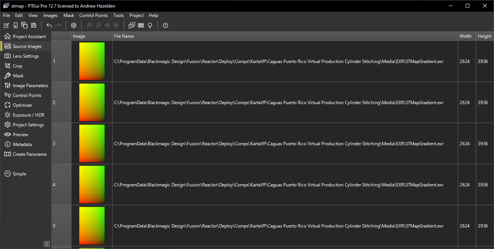
Save the PTGui Project file to disk.
Editing PTGui JSON Project Files¶
Editing PTGui JSON Project Files
It is worth noting that it is fully possible to use a programmer's text editor like Notepad++ for Fusion (Windows) or BBEdit (macOS) to open up an existing PTGui .pts file and manually use a regular expression based "Find & Replace" approach to swap out the images. A PTGui v11 and v12 .pts file is saved as a JSON format document. This makes it pretty easy to edit since JSON is a standard format that many editing tools are familiar with.
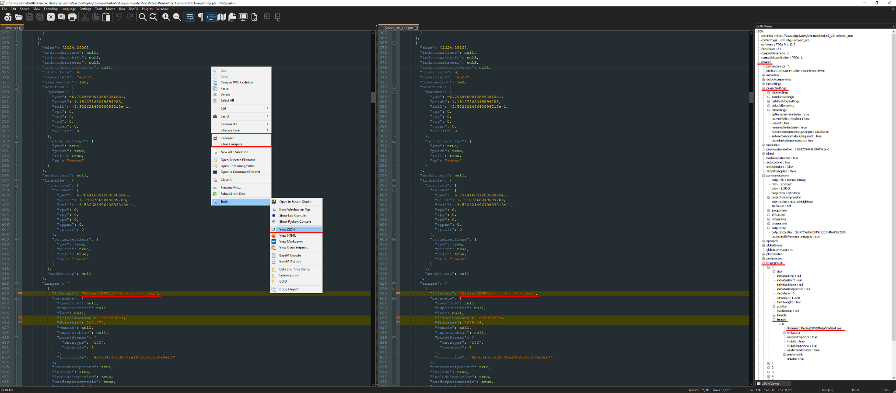
This screenshot shows the "Notepad++ for Fusion" atom package in Reactor being used to edit and relink the photos in a .pts file. By combining a JSON based syntax highlighting mode in your text editor, along with file differencing based comparisons, and a JSON hierarchy browser, you'll have assembled something that approximates a fancy PTGui project based text editing IDE.
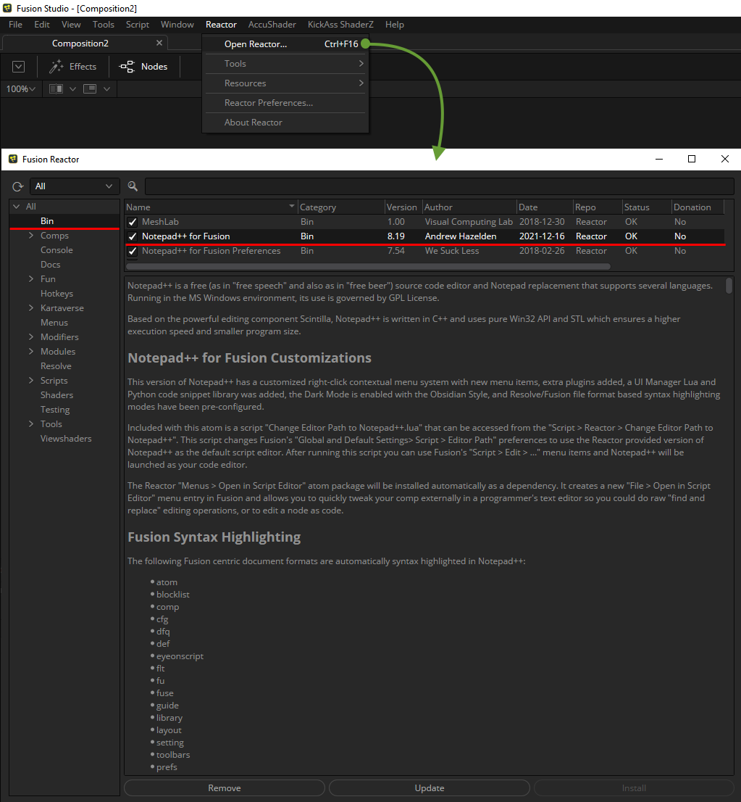
Step 8. Render the PTGui Project¶
Step 8. Render the PTGui Project
Now that we've got a PTGui .pts file that is fully tuned for ST Map based template generation, we can render the individual warped views to disk.
Switch to the "Create Panorama" tab.
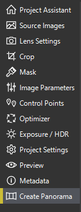
Click the "Create Panorama" button.
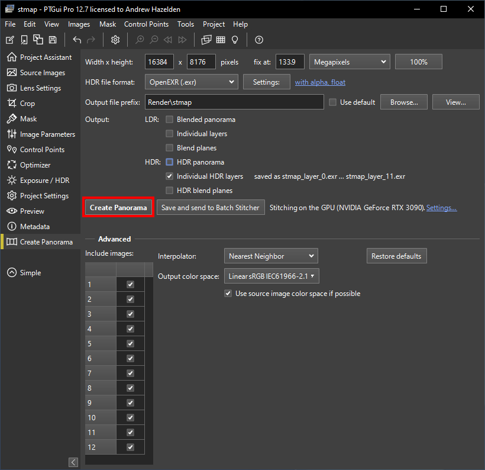
After a few seconds, you will see the PTGui progress bar complete the rendering stage.
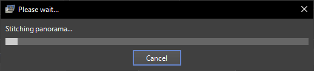
Take a moment to look in the Explorer (Windows) or Finder (macOS) desktop folder browsing view, and navigate inside the folder where the .pts file is saved on disk.
There should be a new "Render" sub-folder that holds each of the warped ST map template images we just created.
The images are currently named:
stmap_layer_0.exr
stmap_layer_1.exr
stmap_layer_2.exr
stmap_layer_3.exr
stmap_layer_4.exr
stmap_layer_5.exr
...
As a pro-tip, it's very handy to rename the final ST Map template images to a simpler "sequentially named" format like:
stmap01.0000.exr
stmap02.0000.exr
stmap03.0000.exr
stmap04.0000.exr
stmap05.0000.exr
...
Note: You really do want to add the "dummy" frame numbers, in a 4-digit leading zero-padded nature, to the end of each image's file name so you've got a "name.####.ext" formatted "image sequence" based filename.
If we do this step, we avoid having the set of multi-view ST Map images automatically loaded as one single unified animated ST Map sequence. This is not how we want to use the maps as we want to have each ST Map loaded in as a separate composite branch, alongside the source footage.
Step 10. Creating an ST Map Gradient¶
Step 10. Creating an ST Map Gradient
In this part of the workflow guide several different approaches for tackling the ST Map "initial" gradient creation task will be explored.
The goal is to try and keep this step as software-agnostic as possible since the starting point ST Map image is made up of a horizontal and vertical gradient, which is hopefully, not too complex of a task to ask a professional imaging tool to carry out.
Blackmagic Resolve/Fusion¶
Blackmagic Resolve/Fusion
KartaVR UVGradientMap Macro
If you have access to a copy of the Fusion compositing environment provided by Resolve's Fusion page, or from Fusion Studio, you can take advantage of KartaVR's provided "UVGradientMap" macro.
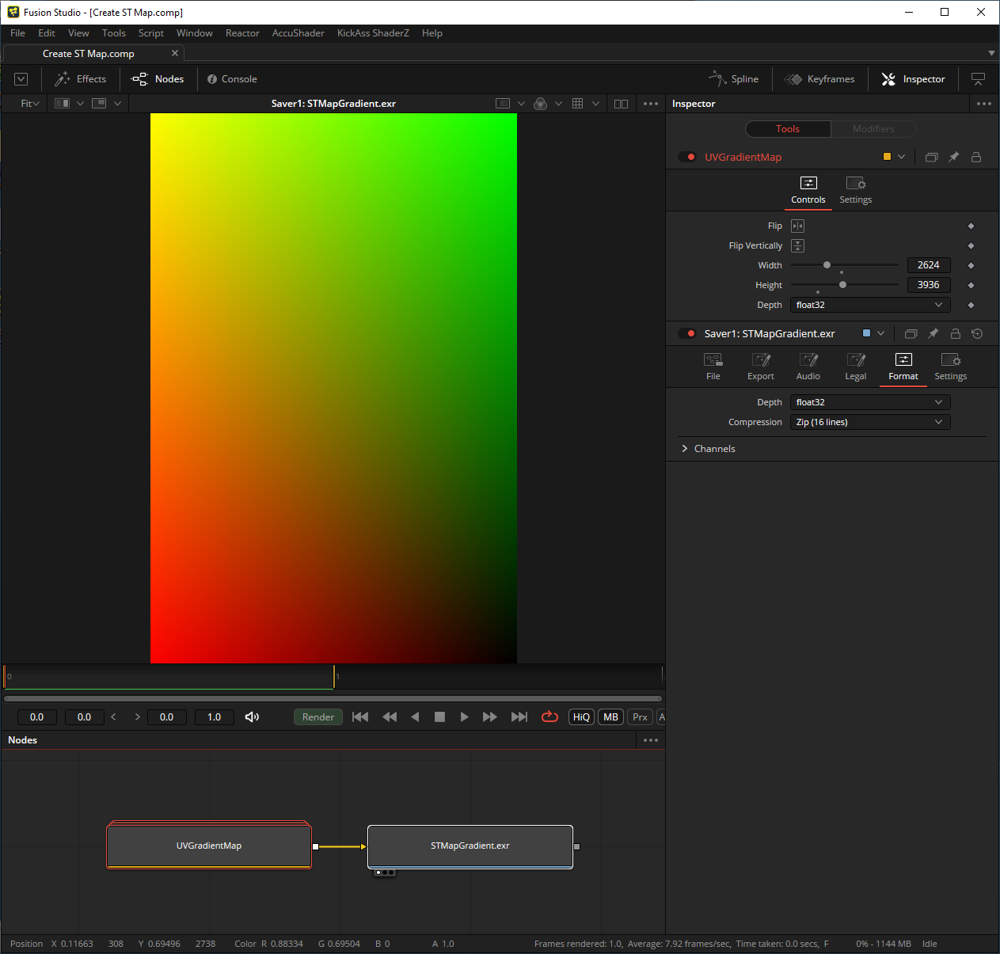
The "UVGradientMap" macro allows you to quickly specify the width, height, and bit-depth for your new ST Map initial gradient template image.
If needed, you can also set options for flipping the image horizontally or vertically.
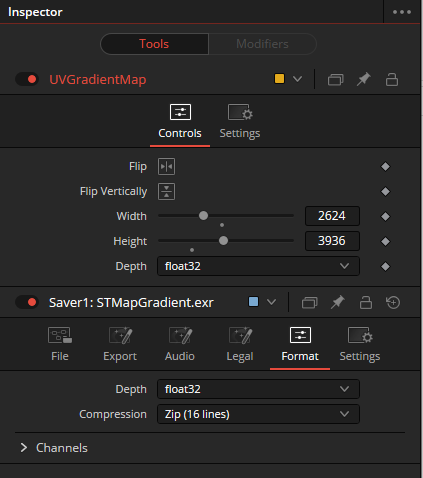
In the Fusion "Nodes" view, you would wire the image output from the KartaVR provided "UVGradientMap" macro into a Saver node. The Saver node needs to be configured to use an EXR image format, with ZIPS compression, and a "float32" 32 bit floating-point image bitdepth.
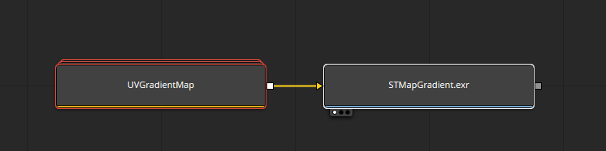
Fusion CustomTool Node¶
Fusion CustomTool Node
If you are a compositing TD (Technical Director) who is comfortable with expressions and formulas, you could also explore the Fusion built-in CustomTool node as a way to generate an ST Map in a super precise fashion.
To use this workflow, connect a Background node to the CustomTool node. The Background node generates the canvas size by defining the image width, image height, and initial bit depth. Then the CustomTool creates the vertical and horizontal direction based red/green gradient effect needed for the starting point of an STMap template.
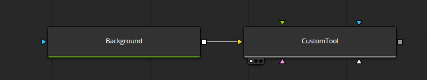
Since the CustomTool works with normalized coordinates, running from 0 - 1 for the frame size, which are inherently resolution independent, you can make a new ST Map simply by typing in the values "X" and "Y" for the Red and Green channels.
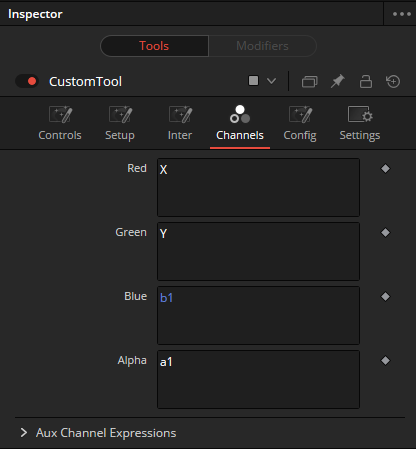
As a small tip, if you need to flip the ST Map gradient horizontally, you can start with a value of one in the field, then subtract the current X axis value, using a CustomTool expression like "1 - X". Nice!
Adobe Photoshop¶
Adobe Photoshop
If you are a die-hard Adobe Photoshop fan, the (free) Domemaster Photoshop Actions Pack toolset includes handy parametric UV pass (ST Map) creation actions.
With this toolset, the red-green colored horizontal/vertical ST Map gradient pattern is created as a smart object so it maintains its re-editable nature and vector-like resizability.
One step you need to do is to resize the Photoshop document to match your original "source" photo's image width/height. This is done immediately after you use the Domemaster Photoshop Actions Pack to add the new ST Map gradient to the photoshop layer stack.
UV Pass Actions
- UV Rectangle Gradient Landscape Layout
- UV Rectangle Gradient Portrait Layout
- UV Equirectangular to Angular Gradient
- UV Equirectangular to Domemaster Gradient
- Horizontal Offset 960px
- Vertical Offset 960px
- Rotate 90 Degrees
- Rotate 180 Degrees
- Rotate 270 Degrees
- Flip Vertical
- Flop Horizontal
- Gamma 2.2 to 1.0 Repair
- Gamma 1.0 to 2.2 Repair
The Interconnected Nature of Framebuffer Bit-depths and ST Map Resolution¶
The Interconnected Nature of Framebuffer Bit-depths and ST Map Resolution
ST Map gradient images need to be stored in a high dynamic range image format to function correctly, and the image should be at the exact frame size (width and height) as the original photo, too.
If you save an ST Map as an 8 bit per-channel JPEG or PNG format image, the maximum size of the output resolution you can have from the process is only 256px width by 256px height. This is due to the way an ST map uses the color range (of an 8 bit, 10 bit, 12 bit, 16 bit, or 32 bit per channel image) as the driver of the X and Y pixel plotting location for the warping process.
An 8 bit per-channel image provides a color range of 0-255, which can be described as 256 unique values that can be used for the warping LUT (Look Up Table). The 256 color values are calculated as 2^8 if you are a math geek.
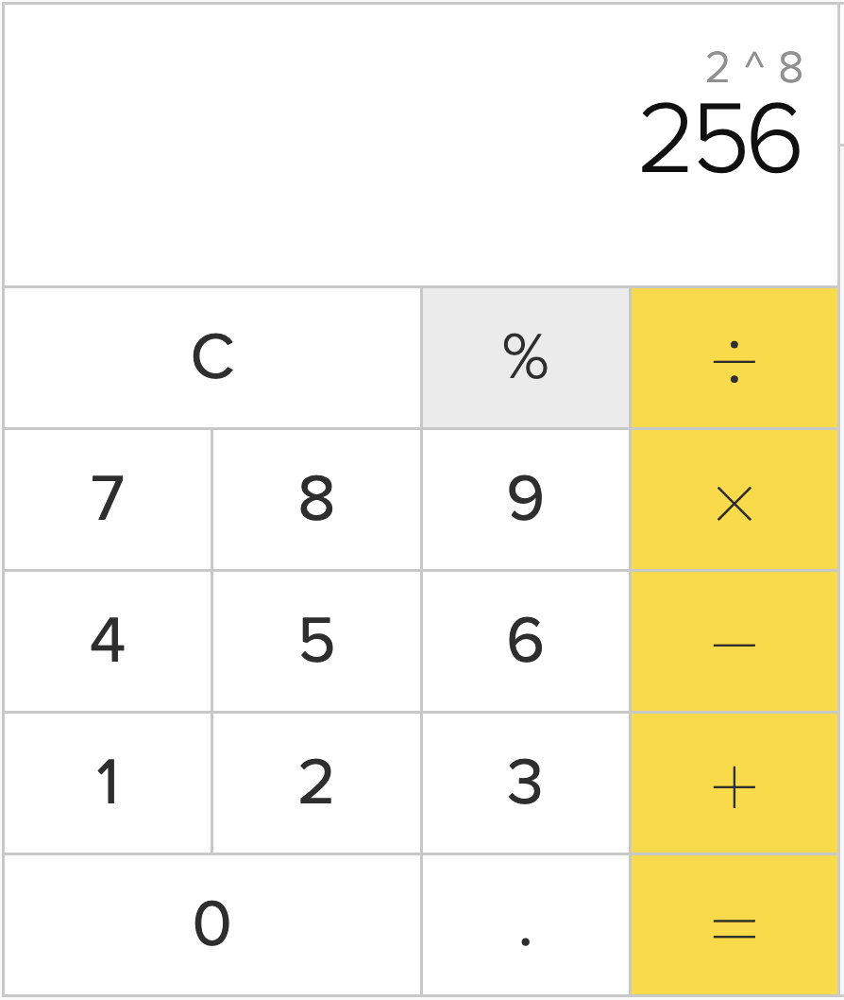
By comparison, an unsigned 16 bit per channel integer image supports a color range of 0-65535 which can be calculated as 2^16.

This gives a lot more resolution to work with. In this case the ST map warping precision could potentially exceed the capability of a 32K x 32K resolution image on the output side of things, which is great.
General speaking, for most ST map generation needs, a 32-bit per-channel floating-point image in many ways is better to use than a 16 bit half-float or 16 bit integer image, due to the standardization of that floating-point format's use as the best / highest specification option available in photo editors, composting packages, game engines, and in OpenCL/CUDA/Metal based GPU framebuffers.
Step 11. Stitching Immersive Media with ST Maps¶
Step 11. Stitching Immersive Media with ST Maps
After Effects ST Map Based 360VR Video Stitching¶
After Effects ST Map Based 360VR Video Stitching
RE:Vision Effects has a "RE:Map" plugin that is available for many compositing software packages including After Effects. If you buy one RE:Map license it will run with the same license, on the same host workstation, in just about every comp tool made.
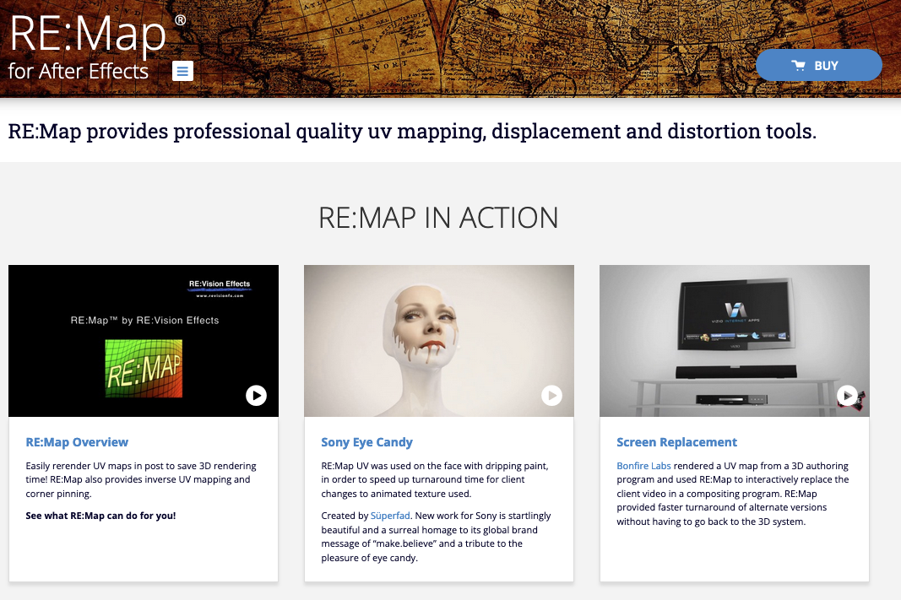
Fusion ST Map Based 360VR Video Stitching¶
Fusion ST Map Based 360VR Video Stitching
In Fusion you have several nodes you can use to perform ST map based stitching:
Fusion Texture Node¶
Fusion Texture Node
There is a built-in "Texture" node in Fusion. The main downside is that it cannot pass an alpha channel through the warping process.
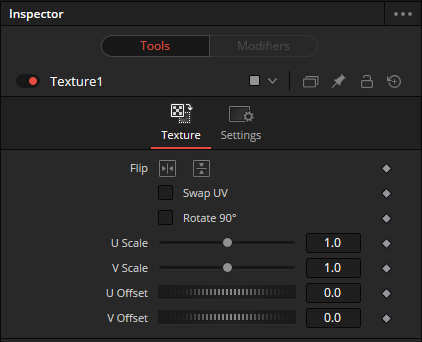
RE:Map Plugin¶
RE:Map Plugin
RE:Vision Effects has a "RE:Map" plugin that is available for many compositing software packages including Resolve/Fusion. If you buy one RE:Map license it will run with the same license, on the same host workstation, in just about every comp tool made.
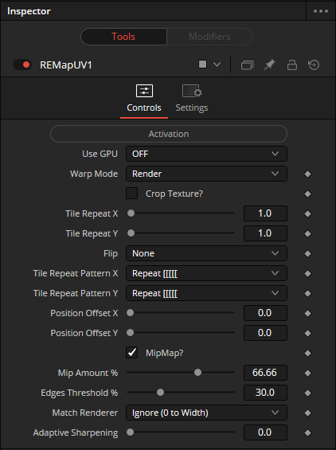
Fusion STMapper Fuse¶
Fusion STMapper Fuse
Jacob Dannell from Emberlight released a very fast and high-quality "ST Mapper" DCTL fuse that can be added to Resolve/Fusion v16-17.4.3+ via the Steakunderwater forum's Reactor package manager. It is quick and supports alpha channels.
After I add an ST Mapper node to my comp, the first thing I tend to change in the Inspector window is the "Crop: STMap Frame" combo box menu item, and I enable the "[x] Flip V" checkbox. One could right-click in the nodes view, and save those options as a default setting for the node if they wanted to.
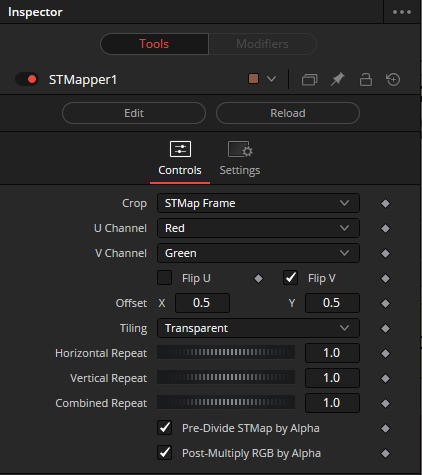
There is a KartaVR provided variation of the STMapper fuse called "STMapper Inline". It is unique in that it is capable of running in the Resolve Edit page timeline environment via a technique called an Effects Template macro.
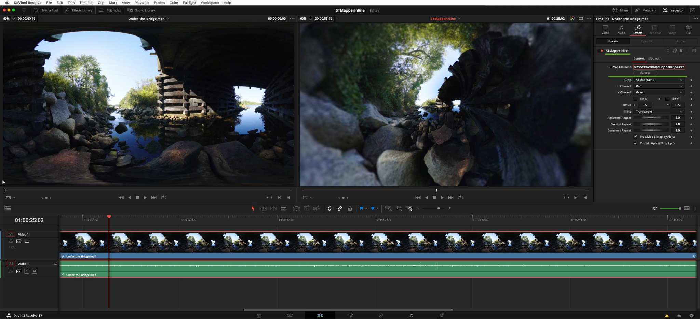
Pro Tip: Instance Your Fusion Nodes
When adding several ST map based warping nodes to a Fusion comp, you can manage the setting more efficiently through the use of "instanced nodes". This will keep the ST Map warping settings in the Inspector window synced up across each of the camera views you process.
Instanced nodes can be added to a Fusion comp by copying the first node into your clipboard copy/paste buffer. Then you right-click in the Nodes views, and from the contextual menu select the "Paste Instance" menu item, or use the Ctrl+Shift+V (Windows) hotkey.

This will add the extra warping nodes in a way that all controls are linked back to the first node. When two nodes are instanced together in the Nodes view, there is a thin green line that connects them together visually so you can see the instanced relationship.
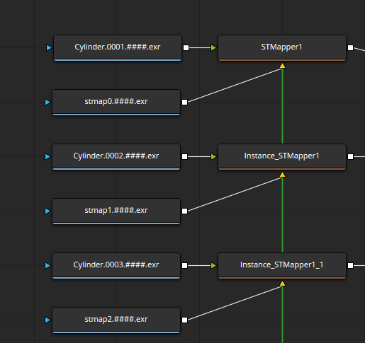
If you later need to customize a few individual UI controls on instanced nodes, you can right-click in the Inspector window on a specific attribute and then select the "Deinstance" item from the contextual menu.
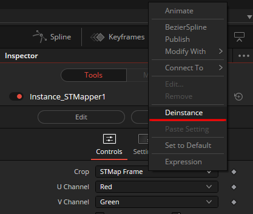
This instancing of nodes approach is useful for cases where you need to perform subtle per-view changes on multi-view 360VR camera rig based compositing operations.
Fusion Lens Distort Node¶
Fusion Lens Distort Node
If you want to use ST Maps to correct for lens distortion in live-action plate footage used in VFX workflows, Resolve/Fusion includes a LensDistort node that can be used to manually calibrate and process checkerboard lens alignment grids.
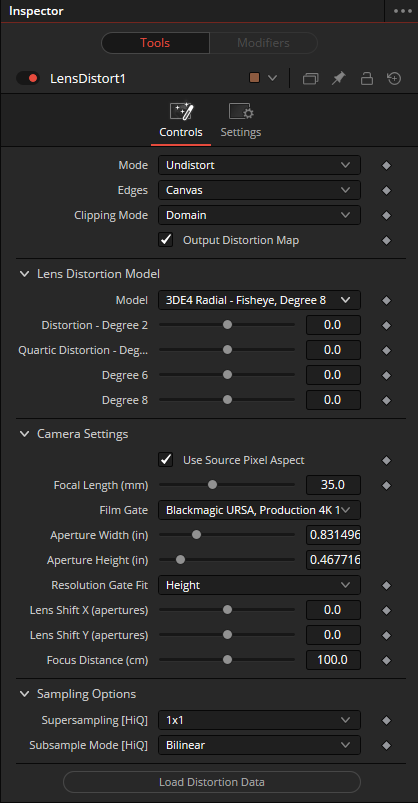
The LensDistort node supports several camera lens models including the output from the PFTrack, and 3D Equalizer match-moving software.
Interestingly, the 3D Equalizer options include a fisheye lens model called "3DE4 Radial - Fisheye, Degree 8" which is a perfect fit for fulldome, VR180, and 360VR video stitching needs if you have to un-distort and linearize the f-theta warping present in footage shot on a circular fisheye lens based camera array.
The output from the LensDistort node can be either a lens corrected RGBA image, or an ST Map which is produced by turning on the "[x] Output Distortion Map" checkbox at the top of the Inspector view.
NukeX ST Map Workflows¶
NukeX ST Map Workflows
The Foundry NukeX documentation includes a guide on STMap template creation using an Expressions node.
Once you have generated the required ST Map template image, it can be used to distort the footage in your NukeX composite with the aptly named STMap node. To help artists get started, there is a Working With STMaps guide.
NukeX ships with a LensDistort node that can be used to process checkerboard lens alignment grids where the output is typically an ST Map style image. More details about lens distortion techniques in NukeX are covered in the Working with Lens Distortion guide.
Blender Compositor ST Map Workflows¶
Blender Compositor ST Map Workflows
Blender's built-in compositing environment includes a MapUV node. This node, while very minimal in the controls presented to the end user, allows artists to perform ST Map (UV pass retexturing) techniques.
TouchDesigner ST Map Based Real-Time 360VR Video Stitching¶
TouchDesigner ST Map Based Real-Time 360VR Video Stitching
More information to be added shortly.
Closing Notes¶
Closing Notes
Thanks for reading this workflow guide on ST Map-based techniques. I'm sure it took a long time to slog through this lengthy technical content. I hope this guide will help cement new ideas in your mind on lens distortion correction techniques.
The motivation for writing this new content was to illustrate and describe approaches that can be used to perform high-speed panoramic warping with the existing software tools you likely already have access to on your workstation, today.
After writing this ST Map guide, and chatting with a stereo panoramic photographer friend, Antonio... I'd like to boldly and seriously put forward a term to be used for describing the color shading of ST Map initial templates in a colloquial sense: An immersive content creator uses a "Mango Map" to perform "Mango Warping".
Essentially, if you look at the specific shading of a freshly made red/green channel-based ST Map "initial lens distortion" template, it looks a heck of a lot like the outside color of a peeled mango.